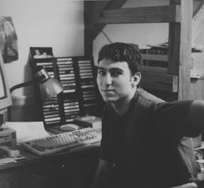

|
 |
"...especially with rock music, I guess I'm just kind of starting to think it all sounds the same. I'm kind of starting to think it's all kind of disposable in a way. " |
|
I'm a psychology major. I'm not really that involved on campus or anything. I play
guitar and I like to read and stuff like that.
I trained the first semester my sophomore year. I did my show for two semesters. It was kind of just chance because my roommate was going to do it. I just heard this message on the answering machine and I was like, wow, that sounds cool. I just wanted to play music. I wanted to have access to all the music. I had no idea what kind of music they played, or what it was all about. It was mostly just one of those things I guess. I just started getting really involved I guess these last couple of semesters. I did a 5-7 my first semester and then I moved into the 2-5 slot. At first when I came in, I thought I didn't know anything about music, compared to most of the people here probably. I just kind of assumed that. I never felt like I was doing a really bad show. But occasionally there’d be a little 'x' next to something I'd played. I'd be like "What's wrong with that?" [My musical tastes] have definitely changed a lot. I haven't just quit liking anything that I used to like. But, especially with rock music, I guess I'm just kind of starting to think it all sounds the same. I've just heard so many bands. I'm kind of starting to think it's all kind of disposable in a way. Any of these rock bands are pretty much as good as any other. I've started listening to a lot more jazz and more experimental kinds of music I guess. It's kind of bad in a way, because I really don't get that kind of satisfaction out of rock music anymore. So I kind of don't like that, you know? I think most people just turn to it at some point and they're kind of like, "What is this, this weird stuff they're playing?” and they just flip right back to their regular radio station. I don't think it's part of people's consciousness at all. If we continue to play the kind of stuff we do and do what I think a radio station should be doing, I don't think it's going to mesh at all with what the average Duke student is doing. I like it the way it is, where it's doing something completely different than commercial radio and people can pretty much play whatever they want and play lots of different styles of music at the same time, mixed together. I just don't think most people want to hear that. It's not the kind of thing that you can get just masses of students to kind of rally with or anything. I’ve never heard anyone actually present an argument, cause I just don't think anyone cares. I don't know of any students that are upset about it. You definitely have to look at it from the educational standpoint. It's just like any of the things that are organized or shown on campus. It's not necessarily what people want to see the most, or hear the most. At first, I guess I was just more used to dealing with students, with people my own age that were doing the same things I was. But I like it a lot, just some of the people I met that are doing completely different things than I’m doing, and outside of doing the radio station, there just wouldn't be that much in common, you know? I think there's a lot of people like that. They like completely different things, do completely different things, and then the radio station is something they share in common. As far as a student organization, definitely the unique aspect of it is having the community members involved. And the way it's kind of loosely run, but at the same time a lot of stuff happens and gets done. The projects that people work on are stuff that they're really motivated to do. It's stuff that a lot of people at the radio station want to see happen, or want to get done. |
It's kind of frustrating...I guess I kind of feel like no one's ever really listened to my
show at all, you know? Last year I was doing my show in the middle of the night, and I
don't think anyone really listened to it. Now none of my friends can really even listen
to it. So, I think not having an antenna is definitely bad, because everyone kind of stops
caring to some extent. Like, "Oh, you know no one's listening. If I make a mistake, it
doesn't matter." Or just even, it's hard to....Sometimes I go in and I’m just not really
excited about my show. Especially when I was doing my 2-5, I would just wonder why
I was even going in to do this.
If there wasn't college radio, you know, none of this stuff would have a chance to be heard. I don't know, if colleges weren't supporting it then, I think it would definitely hurt the people who are just making music because that's what they want to do and they don't really care about making money or being popular. It just supports this one layer of music industry I guess, that otherwise would really have no voice or no chance to be heard. As far as just playing all kinds of music, and just the diversity of music, you're not really going to be able to find that somewhere else. It's something that really can't be commercially supported, just because you can't make a lot of money off of it. Even hip hop is a little bit different I think, because no commercial radio stations will play real hip hop. I think for the hip hop DJ's more, and even the artists recognize it, college radio is the prime way that people hear their music. So I think it has some more commercial ramifications in those aspects because even hip hop groups that are selling gold and platinum record sales, they'll still never get played on commercial radio. That's something that I think is kind of unusual. A group that would be way too popular for us to play otherwise, those parallel hip hop groups still haven't really crossed over to where they're more on the mainstream side of things. I don't think it's really necessary, but for the people that want to do it, it is. I’m sure there's people in the community that listen and you know, there’s just not really anything else good on the radio. I'm sure there's a lot of people that they don't really like all the stuff we play, but at the same time they just don't want to listen to the modern rock station or the classic rock station, or whatever. I think it's pretty necessary just as some kind of alternative to whatever the really popular stuff is. And there for the people who want to do it, whether you're mainly just interested in having access to all this music or just being involved with something and the social aspects of it. I’m not really sure what it's like in other campus organizations, but I guess just in general, the people I’ve met here are definitely some of the best people I’ve met at Duke, you know? I’m not really sure why. I guess people who tend to be interested in hearing different music are also going to be interested in thinking about different ideas or just usually pretty unique people. |